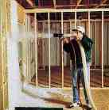

|
How to create your own spray logos... by
[KiF]JoBoot/[KiF]AHA |
 | ||
|
Programs you need:
If you want it the really easy way then you can use the program HLCSM. It faciliates the conversion from any image to WAD by some mouse clicks... but the results are not quite satisfying if you need to resize/cut the image, reduce the color depth or want to use transparency. |
|||
|
Size of the image:
|
|||
|
Create your own logo:
|
|||
|
Convert your logo to pldecal.wad: The colored-logo.zip consists of three files: bmp2wad.bat, qlumpy.exe and ls2wad.exe, with bmp2wad.bat using the exe files in the following way: set hlpath=[path to
your half-life]
What you'll have to do once is this:
What you'll have to do everytime you want to change your logo is this:
That's it. DON'T go to the 'customize' menu to change your name or select a logo. If you do go into the customization screen, the pldecal.wad will be overwritten by a normal style spraypaint, and you'll have to copy the pldecal.wad again. |
|||